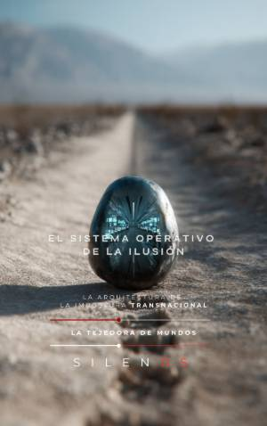

Illuminati
EL SISTEMA OPERATIVO DE LA ILUSIÓN : La Arquitectura de la Impostura Transnacional
Sinopsis
¿Es posible construir un mito global sobre la base del silencio y el engaño deliberado? Esta obra presenta un análisis forense exhaustivo sobre la figura de Carlos Castaneda, desmantelando los cimientos de la arquitectura narrativa que definió a uno de los autores más enigmáticos del siglo XX. Un viaje a la génesis del mito A través de una investigación documental rigurosa, este libro despliega el proceso de borrado biográfico y reinvención transnacional ejecutado por el autor. Desde el examen de registros civiles en Cajamarca hasta la reconstrucción de sus años en San Francisco, se analiza cómo se sustituyó una realidad proletaria por una identidad cosmopolita, diseñada para eludir el escrutinio y validar una autoridad intelectual inexistente. Puntos clave de esta investigación: La deconstrucción del origen: Contraste entre la documentación oficial y el relato autobiográfico del autor. Génesis académica: El papel de las instituciones universitarias y la apropiación de figuras diplomáticas en la invención de un linaje superior. Arquitectura del plagio: Análisis detallado del uso de fuentes externas y la manipulación terminológica para blindar su obra frente a la crítica. La deriva sectaria: Exposición de las dinámicas coercitivas de "Tensegridad" y la creación de un ecosistema de control que trascendió la literatura para impactar en la vida real de sus seguidores. Más allá del chamanismo Este trabajo no se limita a la crítica literaria; explora las conexiones entre las técnicas de control mental y las estrategias de validación de este "sistema operativo". Se examina cómo la invención de un mentor chamánico funcionó como un dispositivo de blindaje epistemológico, convirtiendo una construcción ficcional en un activo financiero y una herramienta de dominación psicológica en el mercado global del misticismo. Una lectura esencial para quienes buscan comprender los mecanismos de la impostura, la sociología de las sectas y la peligrosa frontera donde la invención personal se convierte en una verdad aceptada masivamente.